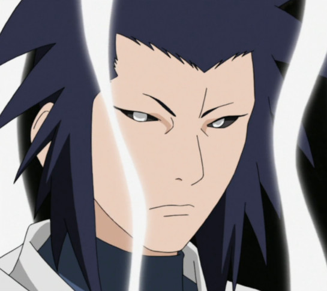
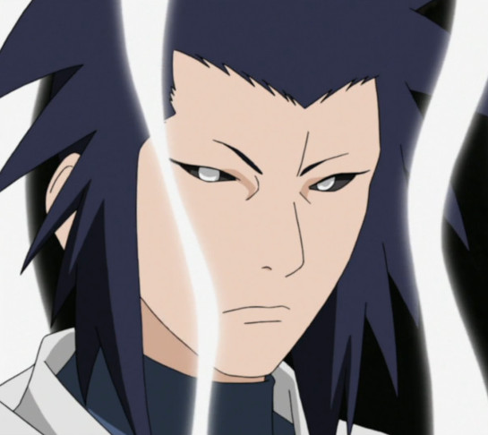
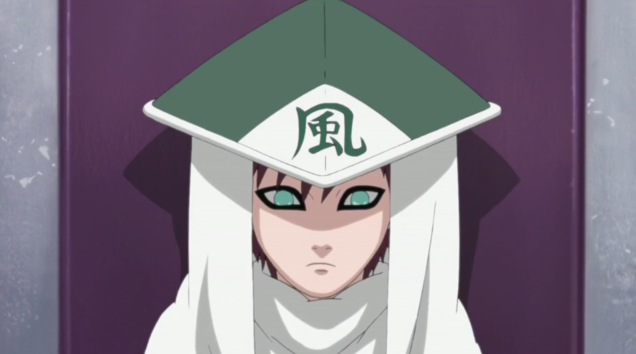
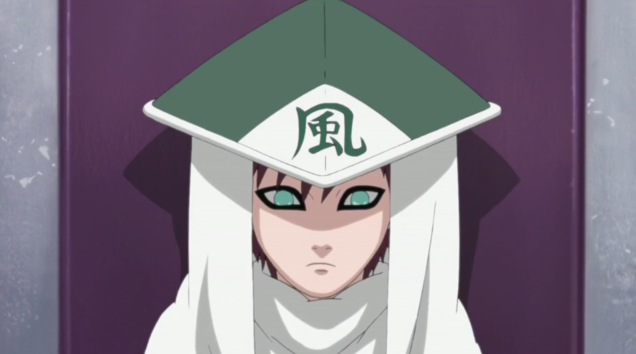
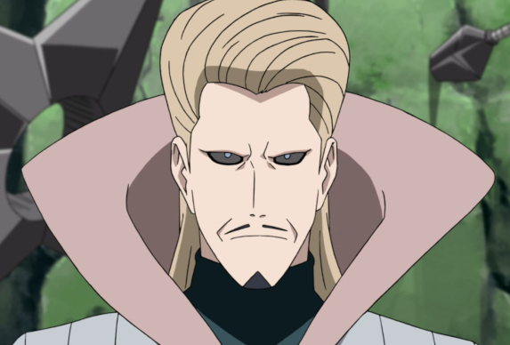
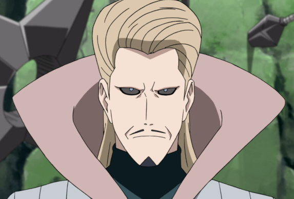
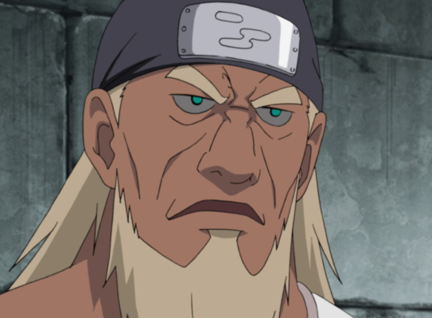
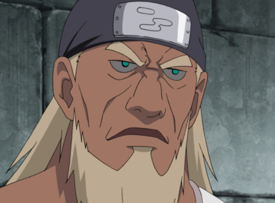

Kage is a title reserved for the leader of one of the Five Great Shinobi Countries' hidden villages, Hidden Leaf Village, Hidden Sand Village, Hidden Mist Village, Hidden Cloud Village, and the Hidden stone Village. They are mainly known as the Five Kage (Hokage, Kazekage, Mizukage, Raikage, Tsuchikage). How a Kage is appointed is different for each village. If the kage dies or is otherwise incapacitated before they can choose a successor, the selection falls to their Land's Feudal Lord who is advised by his committee as well as the village's elders. In the whole naruto series there have been a total of twenty-seven Kages. The title was originally created by Hashirama Shenju soon after the formation of Konoha, making him the first Kage to exist after being elected by the population of his village and country. After the creation of the position, other nations praised this new system that had been created and soon began to imitate it. This new system mean't that the Kage was the village's leader, meaning that most decision making was done by them. They are also tasked with protecting the village at all costs
Hokage meaning (Fire Shadow) is the Kage of the Hidden Leaf village located in the land of Fire. The Hokage is generally regarded as the strongest shinobi in the village. The Hokage is responsible for most of the village's day-to-day affairs, such as assigning missions to the village's ninja or securing funding for the village's projects and personnel. The position can become a handfull as you are responsible of protecting the village, with a heavy workload that can be quite formidable. Once they assume the duties of Hokage, their face is carved into the Hokage Rock. In total there have been Seven Hokage's, first being Hashirama Senju, second Tobirama Senju , third Hiruzen Sarutobi, fourth Minato Namikaze, fifth Tsunade, sixth Kakashi Hatake, and the seventh Naruto Uzumaki.


Kazekage meaning (Wind Shadow) is the kage of the Hidden Sand Village located in the land of Wind, a title on the village's leader. He is usually regarded as the strongest shinobi in the village. The Kazekage position was created after the formation of the village by Reto, the village's founder. In the anime it is not clearly stated how the position is earned but it suggests is that the Kazekage position is heriditary, or at least after the fourth Kazekage. throughout history, the Kazekage have earned a reputation for being feared and respected around the world, yet also has a reputation of being considered cursed, as all Kazekage including the current had met death at the hands of assassins. Each kazakage is made a full-body statue upon their promotion and is kept within the meeting council. There have been a total of five Kazekage's, first being Reto, second Shamon, third name unknown, fourth Rasa, and the fifth Gaara.

 

 

Mizukage meaning (Water Shadow) is the kage of the Hidden Mist Village located in the land of water. The Mizukage position was created after the formation of the Mist village by Byakuren, the village's founder. The position is earned by the strongesst person in the village, regardless of considerations such as age. Throughout the years the Mizukage had influence in all political and military issues that arise in relation to the village and its inhabitants, with each of the four leaders having their own governement mainly marked by strong secrecy, strict internal polotics and limited interactions with other villages. All that changed after the reign of the Fifth Mizukage. There have been a total of 6 Mizukage's, the first being Byakuren, second Gengetsu Hozuki, third name unknown, fourth Yagura Karatachi, fiften Mei Terumi, and the sixth Chojuro.
 



Raikage meaning (Lightning Shadow) is the Kage of the Hidden Cloud village located in the land of Lightning. The position was formed by A, the founder of the village. How they are selected isn't clear. The second was appointed for his long service and detication as the bodyguard of the first Raikage. After the third died his son enherited it. The position is known for its desire to protect the village and its inhabitants as well as for its pride. Throughout the history of the village, the first four Raikage each had the given name A, eaxh A had a tag-team partner named B who was responsible for defending the Raikage. There have been a toatal of 5 Raikage's, first being A, second A, third A, fourth A, and the fifth Darui.

 



Tsuchikage meaning (Earth Shadow) is the kage of the Hidden Stone Village located in the land of Earth. The position was created after the formation of the village by Ishikawa, the village's founder. How the positin is earned is not clear, but what is shown is that three of the four Mizukage were linked by the same family. The Tsuchikage are known for the realisation or true authority, having their shinobi obeying all commands without hesitation. This over time wold give them a bad reputation because the Second and Third Tsuchikage would employ unfair tactics such as taking advantage of other alliances, even in peace time. This would end after the Fourth Great Shinobi War. There have been a total of 4 Tsuchikage's, the first being Ishikawa, second Mu, third Onoki, and the fourth Kurotsuchi.